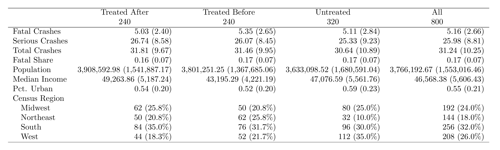
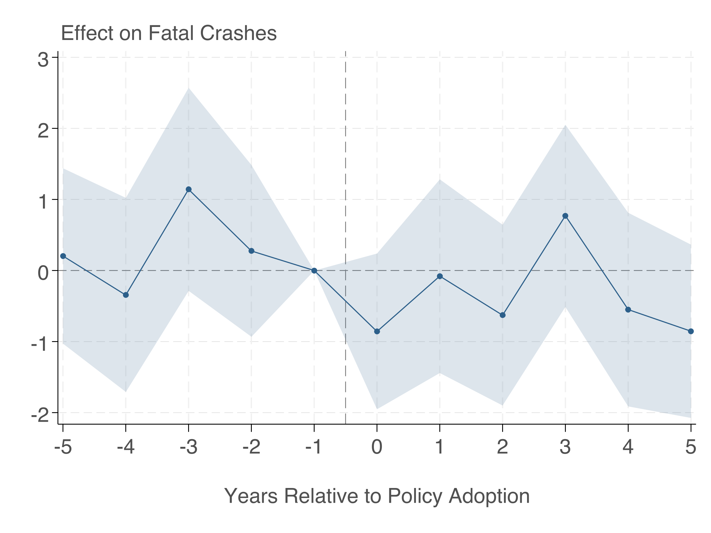
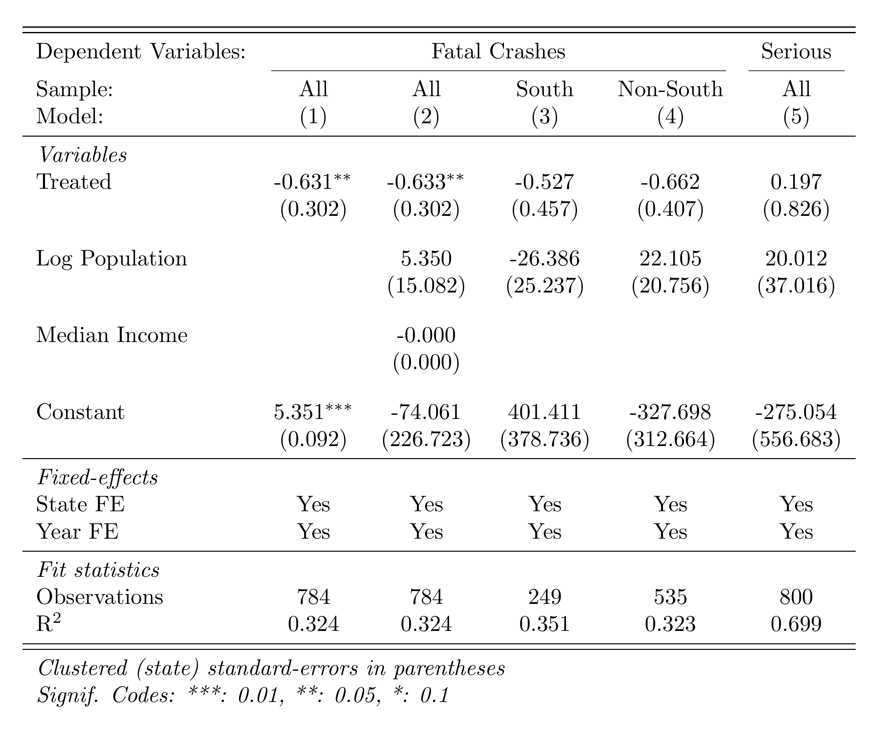
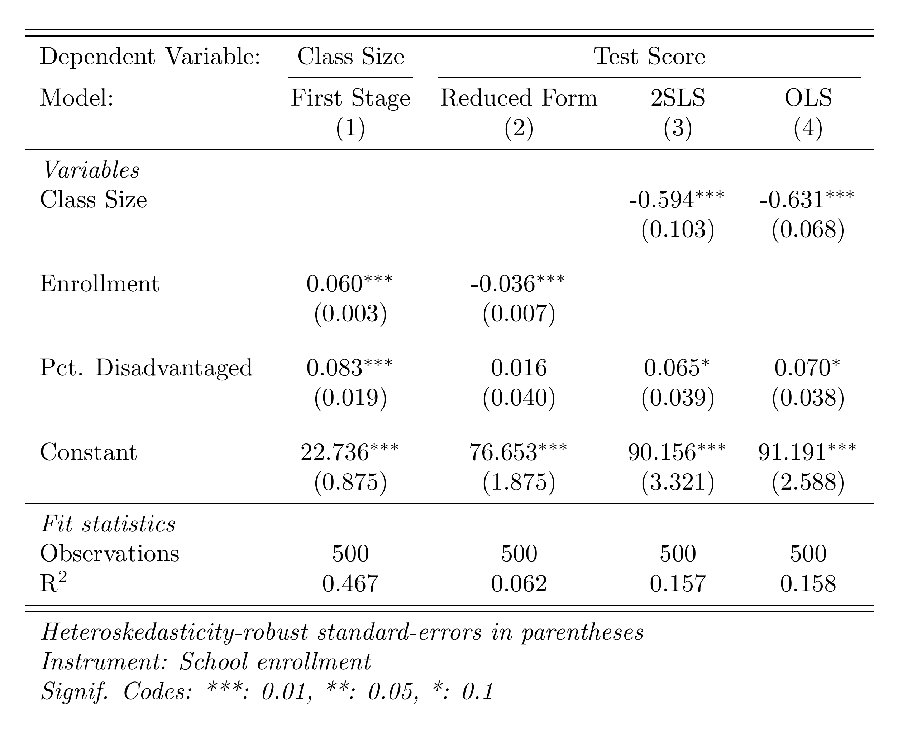
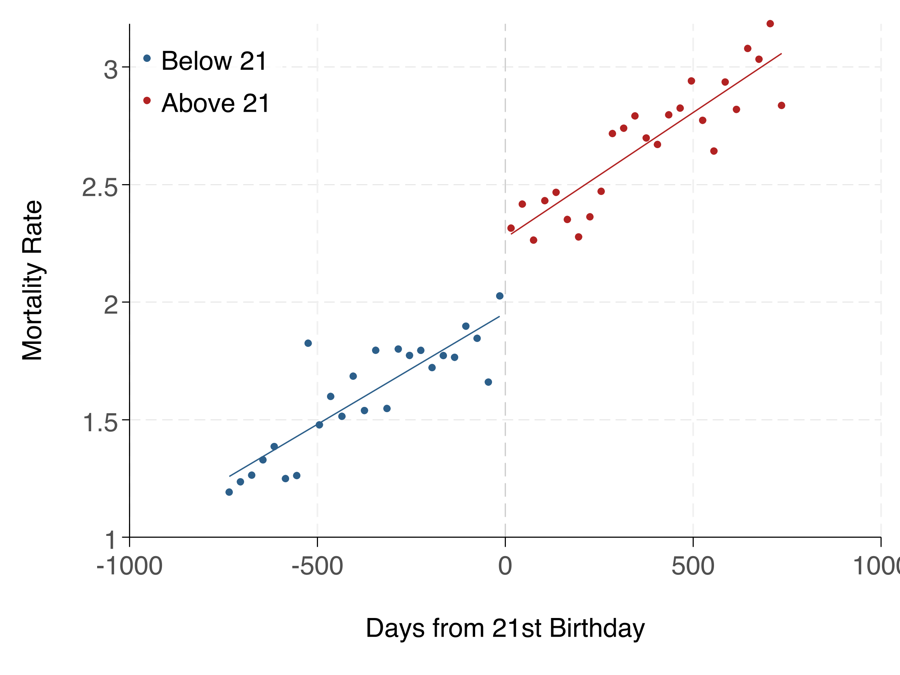
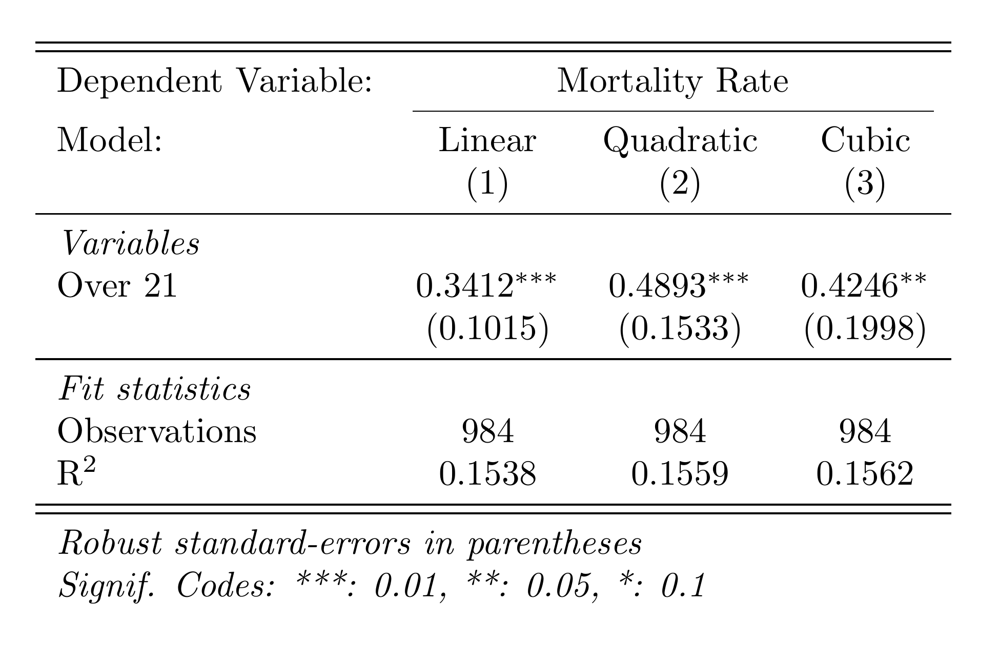

From raw data to publication-ready output — start to finish
This walkthrough takes you through an entire empirical project: loading data, cleaning, merging multiple datasets, running a difference-in-differences analysis with event study, and producing publication-quality tables and figures. We also cover instrumental variables and regression discontinuity as standalone analyses.
Project Setup
An empirical project separates raw data from processed data, and build code (data processing) from analysis code (regressions, tables, figures). The download below contains the full project with this structure already in place.
Download the Project
Starter packages contain data and empty code files for you to fill in as you follow along. Complete packages include finished code that runs end-to-end.
Once you've downloaded and unzipped the project, open a terminal in the project folder and run the master file. You can also run individual scripts for development.
Stata (command line):
Mac: /Applications/Stata/StataMP.app/Contents/MacOS/stata-mp -b do master.do
Windows: "C:\Program Files\Stata18\StataMP-64.exe" /e do master.do
Linux: stata-mp -b do master.do
The -b (Mac/Linux) or /e (Windows) flag runs Stata in batch mode — output goes to a .log file in the working directory instead of the GUI.
Stata (VS Code): Install the Stata Enhanced extension for syntax highlighting and stataRun to run code directly. After installing stataRun, open VS Code settings and set the path to your Stata executable (e.g. /Applications/Stata/StataMP.app/Contents/MacOS/stata-mp). Then open a .do file and press Ctrl+Shift+A (Cmd+Shift+A on Mac) to run the entire file.
R: Run Rscript master.R from the terminal, or open the project in RStudio and source the master file.
Python: Run python master.py from the terminal, or use VS Code with the Python extension to run scripts interactively.
What's Inside
Unzipping gives you a single project folder (e.g. pkg-stata/) with this structure:
Raw data is read-only. Files in build/input/ are never modified by your code. If you need to clean or transform data, save the result to build/output/.
Build vs. analysis. Build scripts (build/code/) turn raw data into analysis-ready datasets. Analysis scripts (analysis/code/) take those datasets and produce results. This separation means you can change a regression without re-processing all your data.
Numbered scripts. Prefix scripts with 01_, 02_, etc. so the execution order is obvious. A master.do file at the root runs them all sequentially.
Outputs are reproducible. Everything in build/output/ and analysis/output/ can be regenerated by running master.do. Never hand-edit output files.
The Master File
The master.do sets global paths and runs every script in order. Anyone should be able to replicate your results by changing one path and running this file.
* MASTER DO FILE
clear all
set more off
* >>> CHANGE THIS to your project path <<<
global root "/path/to/pkg-stata"
global build "$root/build"
global analysis "$root/analysis"
cd "$root"
* Build stage
do "$build/code/01_filter_crashes.do"
do "$build/code/02_collapse_crashes.do"
do "$build/code/03_reshape_crashes.do"
do "$build/code/04_append_demographics.do"
do "$build/code/05_collapse_demographics.do"
do "$build/code/06_merge_datasets.do"
* Analysis stage
do "$analysis/code/01_descriptive_table.do"
do "$analysis/code/02_dd_regression.do"
do "$analysis/code/03_event_study.do"
do "$analysis/code/04_dd_table.do"
do "$analysis/code/05_iv.do"
do "$analysis/code/06_rd.do"
Every raw dataset is a little different, and you'll need to figure out what steps are required to get each one into the format your analysis needs. Parts A and B walk through two examples — cleaning crash data and cleaning demographic survey data — that illustrate common operations (filtering, collapsing, reshaping, looping, appending, destringing). The specific steps will depend on the raw data you're actually working with.
Part A: Cleaning the Crash Data
The crash data has one row per crash, but our analysis is at the state-year level. Scripts 01–03 read the raw data, filter it, collapse it to counts, and reshape it so each severity type gets its own column.
Step 1: Read and Filter Crashes
Start by reading the crash-level CSV. This is granular data we'll need to aggregate.
import pandas as pd
# Read crash-level data (CSV)
crashes = pd.read_csv("build/input/crash_data.csv")
print(crashes.info())
print(crashes.describe())
print(crashes['severity'].value_counts())
Script 01_filter_crashes also drops observations we don't need before any aggregation.
* Load crash data
import delimited "$build/input/crash_data.csv", clear
* --- FILTER: Keep only fatal and serious crashes ---
drop if severity == "minor"
save "$build/output/crashes_filtered.dta", replace
pacman::p_load(data.table)
# Load crash data
crashes <- fread("build/input/crash_data.csv")
# Filter: keep only fatal and serious crashes
crashes <- crashes[severity != "minor"]
fwrite(crashes, "build/output/crashes_filtered.csv")
import pandas as pd
# Load crash data
crashes = pd.read_csv("build/input/crash_data.csv")
# Filter: keep only fatal and serious crashes
crashes = crashes[crashes['severity'] != 'minor']
crashes.to_csv("build/output/crashes_filtered.csv", index=False)
Step 2: Collapse to State-Year-Severity
Script 02_collapse_crashes counts crashes by state, year, and severity type.
use "$build/output/crashes_filtered.dta", clear
* --- COLLAPSE: Count crashes by state-year-severity (long format) ---
gen one = 1
collapse (sum) n_crashes = one, by(state_fips year severity)
save "$build/output/crashes_long.dta", replace
Script 03_reshape_crashes pivots the long data wide, renames columns, computes derived variables, and saves the final crash dataset.
use "$build/output/crashes_long.dta", clear
* --- RESHAPE: Wide so each severity type becomes its own column ---
reshape wide n_crashes, i(state_fips year) j(severity) string
* Rename for clarity
rename n_crashesfatal fatal_crashes
rename n_crashesserious serious_crashes
* Compute total and fatal share
gen total_crashes = fatal_crashes + serious_crashes
gen fatal_share = fatal_crashes / total_crashes
* Save intermediate file
save "$build/output/crashes_state_year.dta", replace
describe
pacman::p_load(data.table)
crashes_long <- fread("build/output/crashes_long.csv")
# Reshape from long to wide: one column per severity type
crashes_sy <- dcast(crashes_long, state_fips + year ~ severity,
value.var = "n_crashes", fill = 0L)
# Rename and compute totals
setnames(crashes_sy, c("fatal", "serious"), c("fatal_crashes", "serious_crashes"))
crashes_sy[, total_crashes := fatal_crashes + serious_crashes]
crashes_sy[, fatal_share := fatal_crashes / total_crashes]
# Save intermediate file
fwrite(crashes_sy, "build/output/crashes_state_year.csv")
str(crashes_sy)
import pandas as pd
crashes_long = pd.read_csv("build/output/crashes_long.csv")
# Reshape (pivot) from long to wide: one column per severity type
crashes_sy = crashes_long.pivot_table(
index=['state_fips', 'year'], columns='severity',
values='n_crashes', fill_value=0
).reset_index()
crashes_sy.columns.name = None
crashes_sy = crashes_sy.rename(columns={'fatal': 'fatal_crashes',
'serious': 'serious_crashes'})
# Compute total and fatal share
crashes_sy['total_crashes'] = crashes_sy['fatal_crashes'] + crashes_sy['serious_crashes']
crashes_sy['fatal_share'] = crashes_sy['fatal_crashes'] / crashes_sy['total_crashes']
# Save intermediate file
crashes_sy.to_csv("build/output/crashes_state_year.csv", index=False)
print(crashes_sy.info())
Why Save Intermediate Files?
Separating your build code (data processing) from analysis code is a key principle of project organization. Save collapsed data so you can modify your analysis without re-running expensive data processing steps every time.
Part B: Cleaning the Demographics Data
The demographic survey data arrives as 21 separate annual CSV files (one per year, 1995–2015). Scripts 04 and 05 stack them into a single dataset, clean the data, and collapse to the state-year level.
Why Loop and Append?
A lot of public-use data is released as separate annual files. You'll need to loop over the files and append them together before you can do anything else. Writing a loop is far better than manually importing 21 files — it's shorter, less error-prone, and generalizes if files are added later.
Step 4: Loop and Append Demographics
Script 04_append_demographics reads each annual CSV, tags it with the year, and appends all 21 files into one dataset.
* Loop through yearly survey CSV files and append
clear
forvalues y = 1995/2015 {
preserve
import delimited "$build/input/demographic_survey/demographic_survey_`y'.csv", clear
gen year = `y'
tempfile temp`y'
save `temp`y''
restore
append using `temp`y''
}
save "$build/output/demographics_combined.dta", replace
# Loop through yearly survey CSVs and stack them
files <- list.files("build/input/demographic_survey",
pattern = "^demographic_survey_\\d{4}\\.csv$",
full.names = TRUE)
demo_list <- lapply(files, function(f) {
dt <- fread(f)
dt[, year := as.integer(gsub(".*_(\\d{4})\\.csv$", "\\1", f))]
dt
})
demo_all <- rbindlist(demo_list)
fwrite(demo_all, "build/output/demographics_combined.csv")
import glob
import pandas as pd
# Read and stack all yearly survey CSVs
files = sorted(glob.glob("build/input/demographic_survey/demographic_survey_*.csv"))
frames = []
for f in files:
df = pd.read_csv(f)
year = int(f.split("_")[-1].replace(".csv", ""))
df["year"] = year
frames.append(df)
demo_all = pd.concat(frames, ignore_index=True)
demo_all.to_csv("build/output/demographics_combined.csv", index=False)
Step 5: Clean and Collapse Demographics
Script 05_collapse_demographics drops DC and pre-2000 years, cleans the income variable (stored as a string with dollar signs and commas), and collapses to the state-year level using survey weights.
Why Destring Income?
Survey data frequently stores numeric values as strings — "$45,000" instead of 45000. You must strip the formatting characters and convert to numeric before doing any math. This is one of the most common data-cleaning tasks in applied work.
use "$build/output/demographics_combined.dta", clear
* Drop DC and pre-2000 years
drop if state_fips == 51
drop if year < 2000
* Clean income: remove $ and commas, convert to numeric
destring income, replace ignore("$,")
* Collapse to state-year level using survey weights
collapse (rawsum) population = weight ///
(mean) median_income = income pct_urban = urban ///
[aweight = weight], by(state_fips year)
save "$build/output/demographics_state_year.dta", replace
demo_all <- fread("build/output/demographics_combined.csv")
# Drop DC and pre-2000
demo_all <- demo_all[state_fips != 51 & year >= 2000]
# Clean income: remove $ and commas
demo_all[, income_num := as.numeric(gsub("[\\$,]", "", income))]
# Weighted collapse to state-year level
demographics <- demo_all[, .(
population = sum(weight),
median_income = weighted.mean(income_num, weight),
pct_urban = weighted.mean(urban, weight)
), by = .(state_fips, year)]
fwrite(demographics, "build/output/demographics_state_year.csv")
Now we merge four datasets together: (1) aggregated crashes, (2) state demographics (from Part C), (3) policy adoption dates, and (4) state names. Each merge uses state_fips as the key, with some using year as well.
* Convert CSVs to .dta for merging
import delimited "$build/input/policy_adoptions.csv", clear
save "$build/output/policy_adoptions.dta", replace
import delimited "$build/input/state_names.csv", clear
save "$build/output/state_names.dta", replace
* Load the main dataset and merge everything sequentially
use "$build/output/crashes_state_year.dta", clear
* Merge 1: Demographics — keep only matched rows
merge 1:1 state_fips year using "$build/output/demographics_state_year.dta", ///
keep(match) nogen
* Merge 2: Policy adoptions — keep master + matched (some states never adopt)
merge m:1 state_fips using "$build/output/policy_adoptions.dta", ///
keep(master match) nogen
* Merge 3: State names — keep only matched rows
merge m:1 state_fips using "$build/output/state_names.dta", ///
keep(match) nogen
* Create treatment indicator
gen post_treated = (year >= adoption_year & !missing(adoption_year))
gen log_pop = ln(population)
* Save final analysis dataset
save "$build/output/analysis_panel.dta", replace
describe
pacman::p_load(data.table)
# Load all datasets
crashes_sy <- fread("build/output/crashes_state_year.csv")
demographics <- fread("build/output/demographics_state_year.csv")
policies <- fread("build/input/policy_adoptions.csv")
state_names <- fread("build/input/state_names.csv")
# Merge 1: Crashes + Demographics (on state_fips + year)
panel <- merge(crashes_sy, demographics, by = c("state_fips", "year"), all = FALSE)
cat("After merge 1:", nrow(panel), "rows\n")
# Merge 2: + Policy adoptions (on state_fips only — many:1)
panel <- merge(panel, policies, by = "state_fips", all.x = TRUE)
cat("After merge 2:", nrow(panel), "rows\n")
# Merge 3: + State names (on state_fips only — many:1)
panel <- merge(panel, state_names, by = "state_fips", all.x = TRUE)
cat("After merge 3:", nrow(panel), "rows\n")
# Create treatment indicator
panel[, post_treated := fifelse(
!is.na(adoption_year) & year >= adoption_year, 1L, 0L
)]
panel[, log_pop := log(population)]
# Save final analysis dataset
fwrite(panel, "build/output/analysis_panel.csv")
str(panel)
Merges can be deceptively complicated. There are three types:
1:1 — Each row in one dataset matches exactly one row in the other. This is the most common merge. Example: merging two state-year datasets on state_fips and year.
m:1 (many-to-one) — Multiple rows in the master dataset match one row in the using dataset. Example: merging individual-level data with state-level variables. Many individuals share the same state, so each state-level row gets matched to multiple individual rows.
1:m (one-to-many) — The reverse: one row in the master matches many rows in the using dataset.
In the code above, Merge 1 is a 1:1 merge (one row per state-year in both datasets). Merges 2 and 3 are m:1 — the panel has many state-year rows per state, but the policy and state-name files have one row per state.
The keep() Option in Stata
In Stata, your original dataset is called "master" and the dataset you're merging in is called "using." After a merge, each observation is one of three types:
master — rows from the master that didn't match anything in the using data
match — rows that matched between master and using
using — rows from the using data that didn't match anything in the master
You choose which to keep with the keep() option. Be careful — the wrong choice silently drops observations.
Example: Suppose you have a balanced state-year panel and want to merge in earthquake counts. You collapse the earthquake data to state-year totals, but states with no earthquakes don't appear in that dataset at all.
* BAD: keep(match) drops states with zero earthquakes!
merge 1:1 state year using "earthquakes.dta", keep(match)
* GOOD: keep(master match) preserves all original observations
merge 1:1 state year using "earthquakes.dta", keep(master match) nogen
replace num_earthquakes = 0 if missing(num_earthquakes)
# BAD: inner join drops states with zero earthquakes
panel <- merge(panel, earthquakes, by = c("state", "year"))
# GOOD: left join preserves all original observations
panel <- merge(panel, earthquakes, by = c("state", "year"), all.x = TRUE)
panel[is.na(num_earthquakes), num_earthquakes := 0]
# BAD: inner join drops states with zero earthquakes
panel = panel.merge(earthquakes, on=['state', 'year'])
# GOOD: left join preserves all original observations
panel = panel.merge(earthquakes, on=['state', 'year'], how='left')
panel['num_earthquakes'] = panel['num_earthquakes'].fillna(0)
The Rule of Thumb
Start with a dataset that contains all the observations you want. Use keep(master match) in Stata (or how='left' in R/Python) almost always. Then replace missing values with the appropriate value (often 0, meaning "no events") for any variable you merged in. This ensures your panel stays balanced and you never silently drop observations.
Always Check Your Merges
After every merge, verify: (1) the number of rows is what you expect, (2) there are no unexpected missing values, and (3) the merge type (1:1, m:1, 1:m) matches your data structure. In Stata, the nogen option suppresses the _merge variable. In R/Python, compare row counts before and after.
Part D: Descriptive Statistics Table
Before running regressions, present a descriptive statistics table. A standard format in DD papers has four columns: (1) all observations, (2) treated states in the post-treatment period, (3) treated states before treatment, and (4) never-treated states. This shows how the groups compare and whether there are large pre-treatment differences.
use "$build/output/analysis_panel.dta", clear
* Create group indicator
gen group = 3 if missing(adoption_year)
replace group = 1 if !missing(adoption_year) & year >= adoption_year
replace group = 2 if !missing(adoption_year) & year < adoption_year
label define grp 1 "Treated After" 2 "Treated Before" 3 "Untreated"
label values group grp
* Encode region for factor variable (dtable requires numeric)
encode region, gen(census_region)
label variable census_region "Census Region"
* Label variables
label variable fatal_crashes "Fatal Crashes"
label variable serious_crashes "Serious Crashes"
label variable total_crashes "Total Crashes"
label variable fatal_share "Fatal Share"
label variable population "Population"
label variable median_income "Median Income"
label variable pct_urban "Pct. Urban"
* dtable produces "mean (sd)" format by default
dtable fatal_crashes serious_crashes total_crashes ///
fatal_share population median_income pct_urban ///
i.census_region, ///
by(group) ///
nformat(%14.2fc mean sd) ///
sample(, statistics(freq) place(seplabels))
* Rename "Total" column to "All"
collect label levels group .m "All", modify
collect style header group, title(hide)
* Export LaTeX fragment
collect export "$analysis/output/tables/descriptive_table_raw.tex", tableonly replace
* Strip \begin{table} wrapper (dtable adds it; we just need the tabular)
filefilter "$analysis/output/tables/descriptive_table_raw.tex" ///
"$analysis/output/tables/descriptive_table_s1.tex", ///
from("\BSbegin{table}[!h]") to("") replace
filefilter "$analysis/output/tables/descriptive_table_s1.tex" ///
"$analysis/output/tables/descriptive_table_s2.tex", ///
from("\BScentering") to("") replace
filefilter "$analysis/output/tables/descriptive_table_s2.tex" ///
"$analysis/output/tables/descriptive_table.tex", ///
from("\BSend{table}") to("") replace
pacman::p_load(data.table, modelsummary)
panel <- fread("build/output/analysis_panel.csv")
# Create group column
panel[, ever_treated := !is.na(adoption_year)]
panel[, group := fifelse(
!ever_treated, "Untreated",
fifelse(post_treated == 1, "Treated x Post", "Treated x Pre")
)]
# Variables for the table
vars <- c("fatal_crashes", "serious_crashes", "total_crashes",
"fatal_share", "population", "median_income", "pct_urban")
# Create publication-quality table with datasummary
datasummary(
fatal_crashes + serious_crashes + total_crashes +
fatal_share + population + median_income + pct_urban ~
group * (Mean + SD),
data = panel,
fmt = 2,
output = "analysis/output/tables/descriptive_table.tex"
)
import pandas as pd
panel = pd.read_csv("build/output/analysis_panel.csv")
# Create group column
panel['group'] = 'Untreated'
panel.loc[panel['adoption_year'].notna() & (panel['post_treated'] == 1),
'group'] = 'Treated x Post'
panel.loc[panel['adoption_year'].notna() & (panel['post_treated'] == 0),
'group'] = 'Treated x Pre'
# Variables for the table
vars = ['fatal_crashes', 'serious_crashes', 'total_crashes',
'fatal_share', 'population', 'median_income', 'pct_urban']
# Compute means and SDs by group
stats = (panel.groupby('group')[vars]
.agg(['mean', 'std'])
.round(2))
# Export to LaTeX
stats.T.to_latex("analysis/output/tables/descriptive_table.tex",
caption="Descriptive Statistics",
label="tab:desc")
Here's what the exported table looks like when compiled to PDF:

What to Look For
Pre-treatment balance: Treated Before vs. Untreated should look similar. Big differences suggest selection into treatment.
Post-treatment changes: Compare Treated After vs. Treated Before. This is the raw before/after for treated units.
Sample composition: Report observation counts for each group at the bottom of the table.
From Code Output to Publication-Ready Table
The code above produces a .tex file containing the table body. To get a publication-ready PDF, wrap it in a standalone LaTeX document and compile:
Compile with pdflatex standalone_table.tex. See the LaTeX module for installation details.
Table Formatting Checklist
Use booktabs rules (\toprule, \midrule, \bottomrule) — never vertical lines or heavy grids
Standard errors in parentheses directly below coefficients
Stars for significance with a clear legend at the bottom
Round consistently: 2-3 decimal places for coefficients, 3 for standard errors
Label variables clearly: "Log(Population)" not "log_pop"
Fixed effects indicators: "Yes" or blank (not "No")
Sample size and R-squared at the bottom of every regression table
AI Tools Are Great for Table Formatting
Formatting tables and figures is an excellent use case for AI tools like ChatGPT or Claude. These tasks leave little room for hallucination—the AI just needs to adjust spacing, labels, and LaTeX formatting. Describe what you want and iterate.
Part E: Difference-in-Differences and Event Study
The TWFE Regression
With our merged panel, we estimate the effect of the policy on fatal crashes using two-way fixed effects (state + year FE).
use "$build/output/analysis_panel.dta", clear
* Create log outcome
gen log_fatal = log(fatal_crashes + 1)
* Label variables for table output
label variable post_treated "Post × Treated"
label variable log_pop "Log Population"
label variable median_income "Median Income"
* Main DD regression: effect of policy on log fatal crashes
reghdfe log_fatal post_treated, absorb(state_fips year) vce(cluster state_fips)
Here's the event study plot produced by the Stata code above:

Event study showing dynamic treatment effects. Pre-treatment coefficients near zero support the parallel trends assumption.
Making Figures Publication-Ready
Stata's default graphs look terrible. With a few tweaks, you can produce figures that look like they belong in a top journal. The key reference is Schwabish (2014), "An Economist's Guide to Visualizing Data" (JEP). Tal Gross has an excellent thread showing exactly how to transform Stata's defaults into clean, publication-quality output:
The event study plot above follows these principles. Here's a summary of the key steps:
Remove clutter. No top/right borders (graphregion(color(white))), no unnecessary gridlines, no legend when you can label directly.
Use a single accent color for your main result. Use gray for reference lines and context. The code above uses mcolor("44 95 138") — a muted blue.
Shaded confidence bands are cleaner than error bars for continuous data. In Stata, use rarea for shaded bands instead of rcap for error bars. The event study code above demonstrates this — the twoway rarea command creates the shaded CI bands, while connected plots the point estimates.
Informative axis labels. "Years Relative to Policy Adoption" not "period". Use xtitle() and ytitle() with readable sizes.
Remove the plot title. Economics papers put the title in the figure caption, not on the plot itself.
Export at high resolution. Use graph export "file.png", width(2400) or export as PDF for vector graphics.
Figure Checklist
Can you read all text when the figure is printed at its final size?
Are axis labels descriptive? (not variable names)
Is the aspect ratio wider than tall? (roughly 4:3 or 16:10)
Is the resolution at least 300 DPI for print?
Did you export as PDF (vector) or high-res PNG?
Is the background white? (no gray default)
Are confidence intervals shown as shaded bands (not error bars) where appropriate?
Part F: Professional DD Table with Subgroups
A strong empirical paper doesn't just report the main result. It shows robustness across specifications and explores heterogeneity. Here we create a single table with: (1) the main result, (2) results by region subgroup, and (3) a specification with additional controls.
use "$build/output/analysis_panel.dta", clear
* Label variables for table output
label variable post_treated "Post × Treated"
label variable log_pop "Log Population"
label variable median_income "Median Income"
* Col 1: Main result
reghdfe fatal_crashes post_treated, absorb(state_fips year) vce(cluster state_fips)
estadd local state_fe "Yes"
estadd local year_fe "Yes"
estimates store m1
* Col 2: With controls
reghdfe fatal_crashes post_treated log_pop median_income, ///
absorb(state_fips year) vce(cluster state_fips)
estadd local state_fe "Yes"
estadd local year_fe "Yes"
estimates store m2
* Col 3: South only
reghdfe fatal_crashes post_treated log_pop if region == "South", ///
absorb(state_fips year) vce(cluster state_fips)
estadd local state_fe "Yes"
estadd local year_fe "Yes"
estimates store m3
* Col 4: Non-South
reghdfe fatal_crashes post_treated log_pop if region != "South", ///
absorb(state_fips year) vce(cluster state_fips)
estadd local state_fe "Yes"
estadd local year_fe "Yes"
estimates store m4
* Col 5: Serious crashes as outcome
reghdfe serious_crashes post_treated log_pop, ///
absorb(state_fips year) vce(cluster state_fips)
estadd local state_fe "Yes"
estadd local year_fe "Yes"
estimates store m5
* Export professional table
esttab m1 m2 m3 m4 m5 ///
using "$analysis/output/tables/dd_results.tex", replace ///
se(%9.3f) b(%9.3f) ///
star(* 0.10 ** 0.05 *** 0.01) ///
nomtitles nonumbers ///
label fragment ///
prehead("\begin{tabular}{l*{5}{c}}" ///
"\midrule \midrule" ///
"Dependent Variables: &\multicolumn{4}{c}{Fatal Crashes} &Serious\\" ///
"\cmidrule(lr){2-5} \cmidrule(lr){6-6}" ///
"Sample: & All & All & South & Non-South & All \\" ///
"Model: & (1) & (2) & (3) & (4) & (5) \\" ///
"\midrule" ///
"\emph{Variables} \\") ///
posthead("") ///
prefoot("\midrule" ///
"\emph{Fixed-effects} \\") ///
stats(state_fe year_fe N r2, ///
labels("State FE" "Year FE" ///
"\midrule \emph{Fit statistics} \\ Observations" ///
"R\$^2\$") ///
fmt(%s %s %9.0fc %9.3f)) ///
postfoot("\midrule \midrule" ///
"\multicolumn{6}{l}{\emph{Clustered (state) standard-errors in parentheses}}\\" ///
"\multicolumn{6}{l}{\emph{Signif. Codes: ***: 0.01, **: 0.05, *: 0.1}}\\" ///
"\end{tabular}")
Here's the DD regression table produced by esttab:

Part G: Instrumental Variables
This section uses a separate, pre-built dataset (iv_data.csv) inspired by Angrist & Lavy (1999). We estimate the effect of class size on test scores, using a Maimonides-rule instrument (enrollment determines class size via a maximum-of-40 rule).
The Setup
Endogenous variable: class_size (correlated with school quality)
Instrument: enrollment (determines class size via the Maimonides rule, but plausibly doesn't directly affect test scores)
Outcome: test_score
First Stage
Does the instrument predict the endogenous variable? Check the F-statistic — it should be well above 10.
import delimited "$analysis/code/iv_data.csv", clear
* Label variables
label variable class_size "Class Size"
label variable test_score "Test Score"
label variable enrollment "Enrollment"
label variable pct_disadvantaged "Pct. Disadvantaged"
* First stage: Does enrollment predict class size?
regress class_size enrollment pct_disadvantaged, vce(robust)
estimates store first_stage
* Check the F-stat on enrollment — should be >> 10
test enrollment
pacman::p_load(fixest, data.table)
iv_data <- fread("analysis/code/iv_data.csv")
# First stage: Does enrollment predict class size?
first_stage <- feols(class_size ~ enrollment + pct_disadvantaged,
data = iv_data)
summary(first_stage)
# F-statistic on excluded instrument
cat("First-stage F:", fitstat(first_stage, "f")$f$stat, "\n")
import pandas as pd
import pyfixest as pf
iv_data = pd.read_csv("analysis/code/iv_data.csv")
# First stage: Does enrollment predict class size?
first_stage = pf.feols(
"class_size ~ enrollment + pct_disadvantaged",
data=iv_data, vcov="hetero"
)
first_stage.summary()
# F-statistic on excluded instrument
enrollment_coef = first_stage.coef()['enrollment']
enrollment_se = first_stage.se()['enrollment']
f_stat = (enrollment_coef / enrollment_se) ** 2
print(f"\nFirst-stage F-statistic: {f_stat:.1f}")
Reduced Form
The reduced form regresses the outcome directly on the instrument. If the instrument affects the outcome, it's working through the endogenous variable.
* Reduced form: Does enrollment predict test scores?
regress test_score enrollment pct_disadvantaged, vce(robust)
estimates store reduced_form
# Reduced form: Does enrollment predict test scores?
reduced_form <- feols(test_score ~ enrollment + pct_disadvantaged,
data = iv_data)
summary(reduced_form)
# Reduced form: Does enrollment predict test scores?
reduced_form = pf.feols(
"test_score ~ enrollment + pct_disadvantaged",
data=iv_data, vcov="hetero"
)
reduced_form.summary()
Here's the IV results table comparing OLS, first stage, reduced form, and 2SLS:

OLS vs. IV: What to Expect
OLS is biased because class size is correlated with school quality (omitted variable bias). The IV estimate isolates the causal effect by using only variation in class size driven by enrollment thresholds. The IV estimate should typically be larger in magnitude if OLS is biased toward zero (attenuation bias from measurement error) or could go either way depending on the source of endogeneity.
Part H: Regression Discontinuity
This section uses a pre-built dataset (rd_data.csv) inspired by Carpenter & Dobkin (2009). We estimate the effect of legal drinking access (turning 21) on mortality using a sharp RD design.
The Setup
Running variable: days_from_21 (days relative to 21st birthday)
Cutoff: 0 (turning 21)
Treatment: over_21 (legal access to alcohol)
Outcome: mortality_rate
Linear Specification
The simplest RD: a linear function of the running variable on each side of the cutoff, within a bandwidth.
import delimited "$analysis/code/rd_data.csv", clear
* Label variables
label variable mortality_rate "Mortality Rate"
label variable over_21 "Over 21"
label variable days_from_21 "Days from 21st Birthday"
* Create interaction term
gen days_x_over21 = days_from_21 * over_21
* Linear RD within bandwidth of 365 days
regress mortality_rate over_21 days_from_21 days_x_over21 ///
if abs(days_from_21) <= 365, vce(robust)
estimates store rd_linear
* The coefficient on over_21 is the RD estimate (jump at cutoff)
pacman::p_load(fixest, data.table)
rd_data <- fread("analysis/code/rd_data.csv")
# Linear RD within bandwidth of 365 days
rd_linear <- feols(
mortality_rate ~ over_21 + days_from_21 + over_21:days_from_21,
data = rd_data[abs(days_from_21) <= 365]
)
summary(rd_linear)
# Narrower bandwidth (180 days)
rd_narrow <- feols(
mortality_rate ~ over_21 + days_from_21 + over_21:days_from_21,
data = rd_data[abs(days_from_21) <= 180]
)
summary(rd_narrow)
import pandas as pd
import pyfixest as pf
rd_data = pd.read_csv("analysis/code/rd_data.csv")
# Linear RD within bandwidth of 365 days
subset = rd_data[rd_data['days_from_21'].abs() <= 365].copy()
rd_linear = pf.feols(
'mortality_rate ~ over_21 + days_from_21 + over_21:days_from_21',
data=subset, vcov="hetero"
)
print("=== Linear RD (bw=365) ===")
rd_linear.summary()
# Narrower bandwidth (180 days)
subset_narrow = rd_data[rd_data['days_from_21'].abs() <= 180].copy()
rd_narrow = pf.feols(
'mortality_rate ~ over_21 + days_from_21 + over_21:days_from_21',
data=subset_narrow, vcov="hetero"
)
print("\n=== Linear RD (bw=180) ===")
rd_narrow.summary()
Polynomial Specification
A polynomial specification allows for curvature in the relationship between the running variable and the outcome. This can be more flexible but risks overfitting.

RD plot with linear fit showing a clear discontinuity in mortality at age 21.RD plot with polynomial fit. The discontinuity is robust to allowing curvature in the running variable.

Linear vs. Polynomial: Which to Use?
Start with linear — it's simpler and less prone to overfitting. Use polynomial specifications as robustness checks. If the linear and polynomial estimates are very different, it suggests the result may be sensitive to functional form assumptions. The rdrobust package provides data-driven bandwidth selection and bias-corrected inference, and is the current best practice.